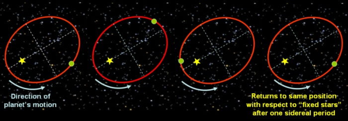

The ‘fixed stars’ provide a useful reference frame for measuring the motions of celestial bodies. Relative to the stars, the sidereal period is the time it takes for a planet to complete one orbit.

The orbit of a planet around the Sun measured with respect to the ‘fixed stars’ is used to determine the sidereal period.
The sidereal period of the Earth is 365.25636 mean solar days, which is slightly longer than the tropical year (measured between successive vernal equinoxes) of 365.24219. In most calendar systems, the length of the year is taken to be 365 days, which is close to the Earth’s sidereal period. Leap years are added to reduce the amount of calendar drift between the observed dates of events (e.g. solstices and equinoxes) and their expected calendar dates.
Planetary data: Sidereal Periods
| Mercury | Venus | Earth | Mars | Jupiter | Saturn | Uranus | Neptune | Pluto | |
|---|---|---|---|---|---|---|---|---|---|
| Sidereal Period (in Earth days) | 87.969 | 224.701 | 365.256 | 686.98 | 4332.589 | 10759.22 | 30685.4 | 60189 | 90465 |